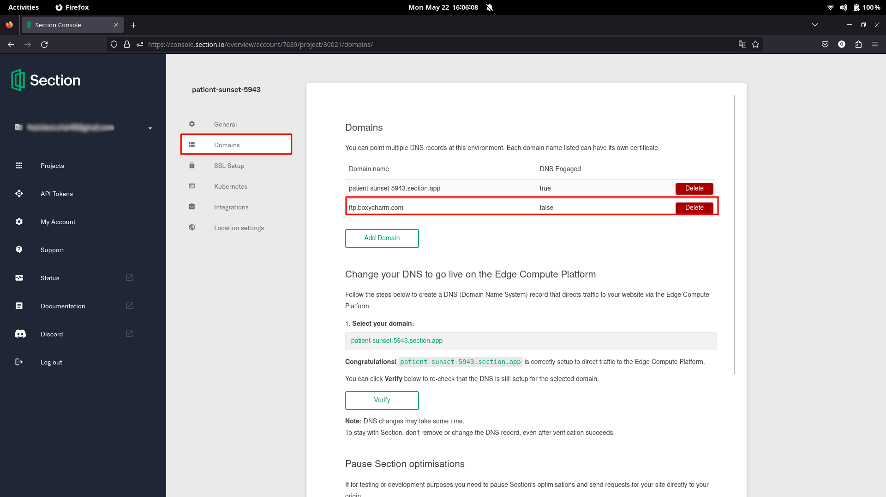
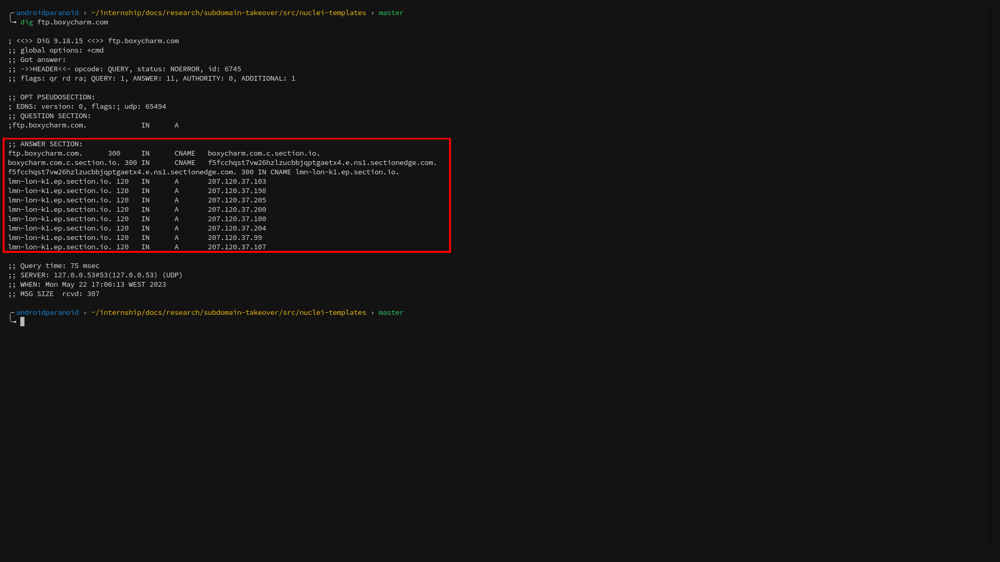
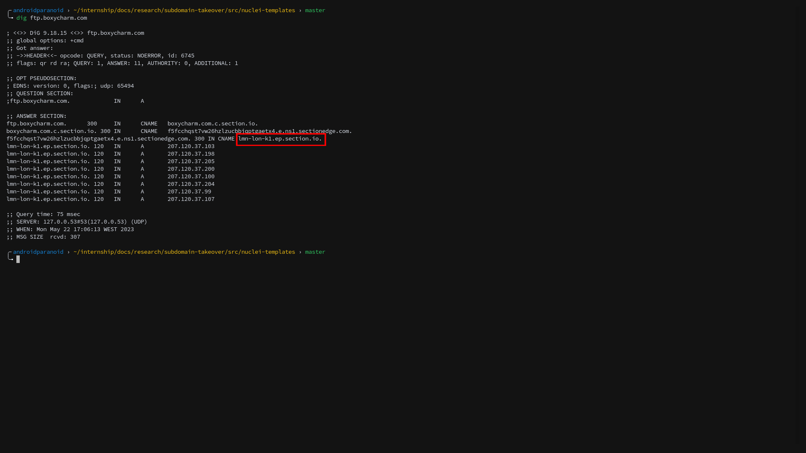

\setcounter{tocdepth}{1} \tableofcontents
Subdomain Takeover - ftp.boxycharm.com (8.2 High)
CVSS Score: 8.2 (High) CVSS:3.1/AV:N/AC:L/PR:N/UI:N/S:U/C:L/I:H/A:N
Description
On May 22th, 2023, as part of a broader Subdomain Takeover (STO) research, the
researchers found that the ftp.boxycharm.com subdomain was vulnerable to
subdomain takeover, by abusing a flaw in the service Section.io. This service allows users to
host a web application and associate it with a subdomain or domain.
It validates the DNS configurations by asserting the added subdomain
has a CNAME record pointing to: <user subdomain>.c.section.io. So,
if the user wanted to associate the subdomain example.char49.com,
he'd have to create a CNAME: example.char49.com.c.section.io.
The user's subdomain is then associated with section.io.
{#fig:1}
In the following attack scenario, the subdomain: ftp.boxycharm.com does not
point to ftp.boxycharm.com.c.section.io. It points to boxycharm.com.c.section.io,
and this points to a valid IP inside section's range of IPs.
However, there exists some sort of functionality in the section.io hosting logic,
that marks the previously described validation steps as
complete (or unnecessary), because ftp.boxycharm.com is already pointing to
a valid IP inside section's range of ip's. Because of this, the validation step is seen as completed and
the DNS automatically propagates, so the project web application content is served in ftp.boxycharm.com
A DNS query showed that the target points to boxycharm.com.c.section.io via
a CNAME record, which in turn points to the following IP addresses:
207.120.37.202, 207.120.37.103, 207.120.37.109, 207.120.37.205, 207.120.37.106, 207.120.37.198, 207.120.37.104, 207.120.37.197
{#fig:2}
In order to successfully exploit the subdomain takeover,
an attacker must know the location of the target subdomain,
and create a web application project, within section.io, with the exact same location.
Section.io writes the virtual host inside the server with an IP assigned depending on the location selected.
Since the vulnerable domain already has a specific location and therefore an IP that clients will connect to when navigating there,
in order for us to take it over, we have to ensure the IP's from the vulnerable web application and
the attacker's section.io project web application are the same. If they are, when he adds
the vulnerable subdomain to his project, the virtual host corresponding to his web application project,
will actually be written inside the server that your vulnerable subdomain (ftp.boxycharm.com) IP points to.
In case of ftp.boxycharm.com it is London (We infer by looking at the last domain in the CNAME chain).
{#fig:3}
At this point the researchers had all the required information to takeover the subdomain. A new project was created, the locations matched, and the subdomain added to the project. After DNS propagation, the contents were served to the subdomain.
Recommendations
- Review DNS configuration and assure that all the aliases and delegations of subdomains to external domains (CNAME, DNAME, NS registers) do not expose these subdomains to takeovers.
- Remove the cname chain of
ftp.boxycharm.comif the domain is unneeded or claim that domain within a section.io project if it is needed.